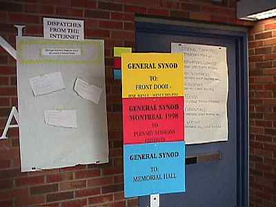

The "Dispatches" Board People who followed this site during Synod who had a message for Synod members or wanted to warm wishes of encouragement or to try to sway their vote, used the Dispatches board. We posted the more than 50 comments received, verbatim, on the Dispatches from the Internet board directly outside the plenary each evening for members to read on their way in the next day.  |